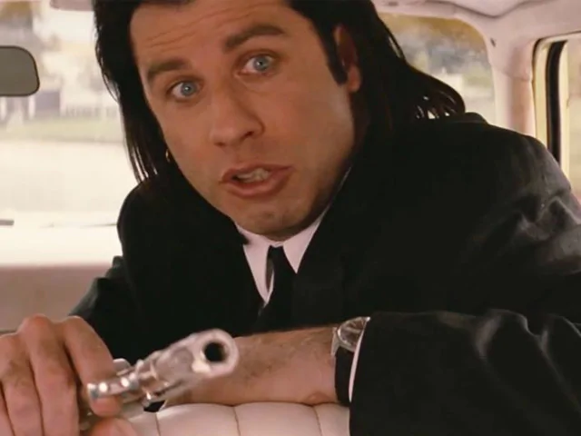

MICROSCOPE

Vincent Vega
(vincentv) 1993/08/01 03:10:13
Vincent Vega was a hitman and associate of Marsellus Wallace. He had a brother named Vic Vega who was shot and killed by an undercover cop while on a job. He worked in Amsterdam for over three years and recently returned to Los Angeles, where he has been partnered with Jules Winnfield.